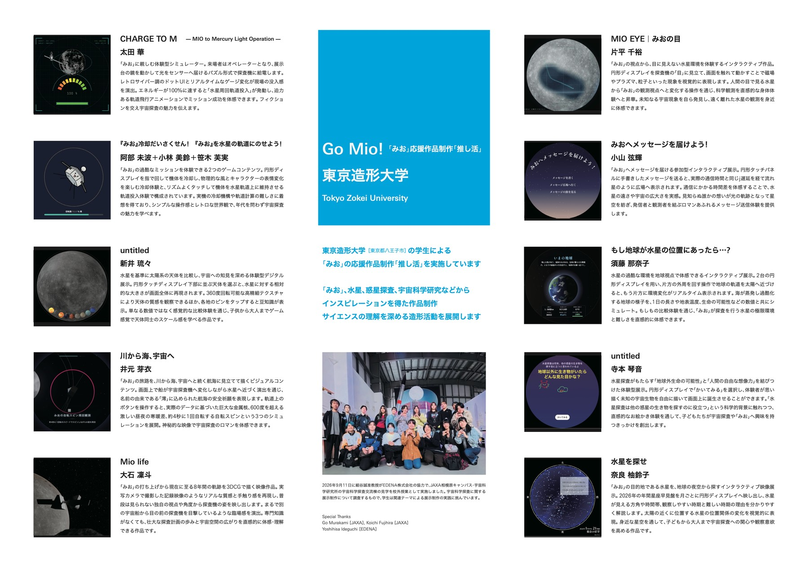
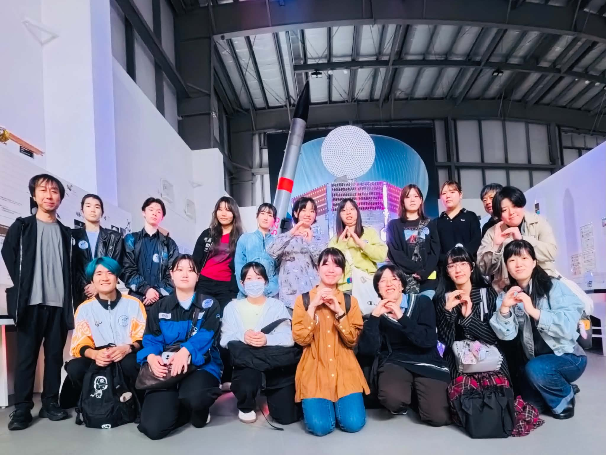

Go Mio!
「みお」から広がる
インスピレーション
東京造形大学の学生による
「みお」応援作品制作「推し活」

EXHIBITION POSTER / 展示資料を見る ↗SCROLL TO EXPLORE ↓
ABOUT
「みお」を通じた
サイエンスの理解
遠い宇宙への好奇心を、
自由な発想でかたちに。
東京造形大学の学生たちが、「みお」、水星、惑星探査、宇宙科学研究などからインスピレーションを得て作品を制作。サイエンスへの理解を深めながら、インタラクティブな作品や映像制作をおこなっています。
「みお」は、水星の磁場や磁気圏の解明を目指すJAXAの探査機です。日欧共同の水星探査計画「ベピコロンボ」に参加しています。
 JAXA 宇宙科学研究所水星磁気圏探査機「みお」公式ページを見る ↗
JAXA 宇宙科学研究所水星磁気圏探査機「みお」公式ページを見る ↗WORKS
学生作品
「作品を体験する」から作品をお楽しみください。

2026年9月11日に細谷誠准教授がEDENA株式会社の協力で、JAXA相模原キャンパス・宇宙科学研究所の宇宙科学探査交流棟の見学を校外授業として実施しました。宇宙科学探査に関する展示制作について調査するもので、学生は関連テーマによる展示制作の実践に挑んでいます。Special Thanks
Go Murakami [JAXA], Koichi Fujihira [JAXA]
Yoshihisa Ideguchi [EDENA]
Go Mio!